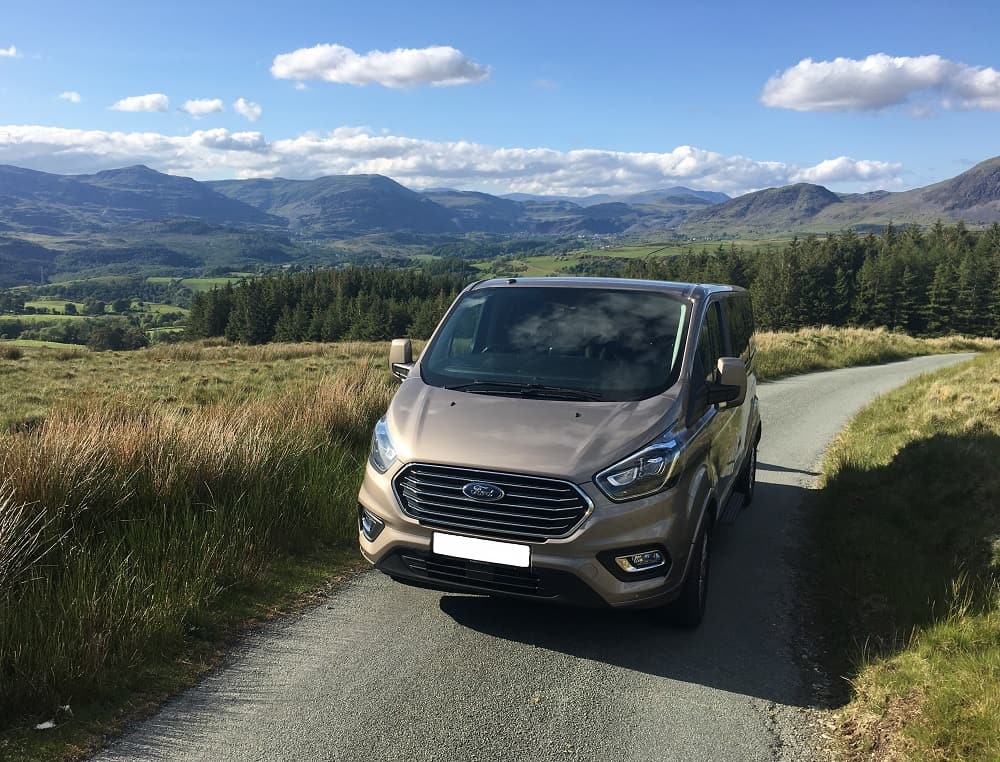
You’ll just love where we take you!
Enjoy touring without the crowds and at a pace that suits you. We’ll take you places where the big tour buses can’t reach or go!
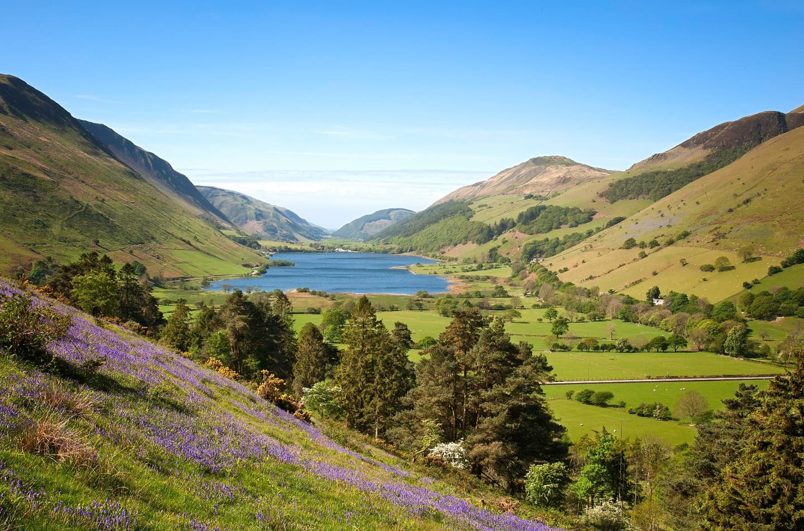
North Wales, Snowdonia (Eryri) National Park and Isle of Anglesey
“We are one of a few private tour operators in the world with a consistent 5 Star rating from our customers!”

Welcome to Wales
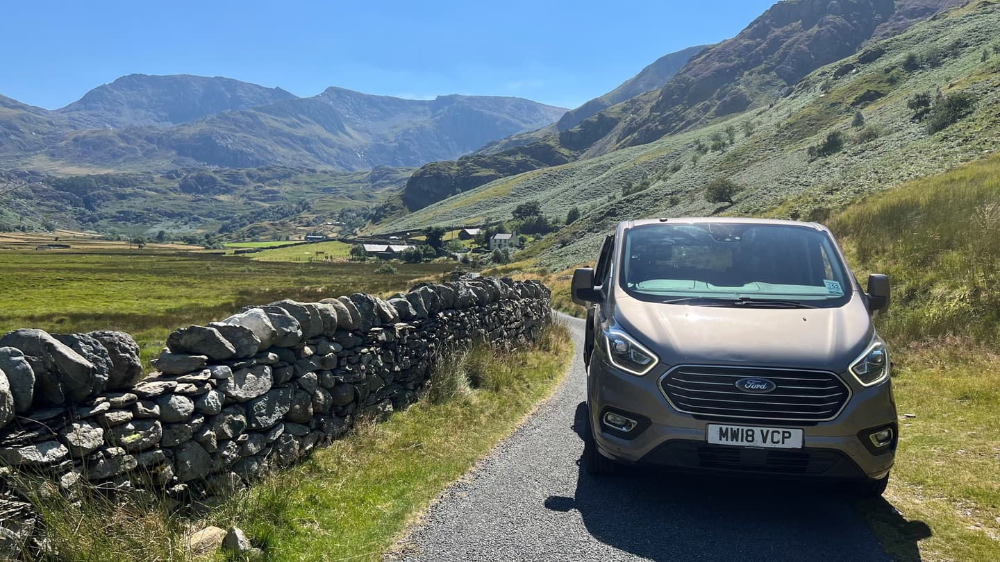
We are a small specialist private tour operator, based in North Wales and we have been operating our highly acclaimed private tour services since 2009 and have become recognised as one of the leading private tour companies in all of Wales.
Our private tour services feature day and multi day tours in and around the North Wales area covering the coastal and borderland areas, the Eryri (Snowdonia) National Park, the Isle of Anglesey and the Llyn Peninsula.
On request, we will consider extended tours to cover other regions of Wales, such as the Pembrokeshire Coastal National Park, the Brecon Beacons National Park, the Wye Valley with Hay on Wye and the capital city of Wales, Cardiff.
Why book with us

Enjoy touring without the crowds and at a pace that suits you. We’ll take you places where the big tour buses can’t reach or go!

Enjoy door to door touring with a pick up right from the front door of where you are staying here in North Wales. As it’s your very own exclusive tour, you get to choose the start and end times of the touring day, where we tour at a pace that suits you.
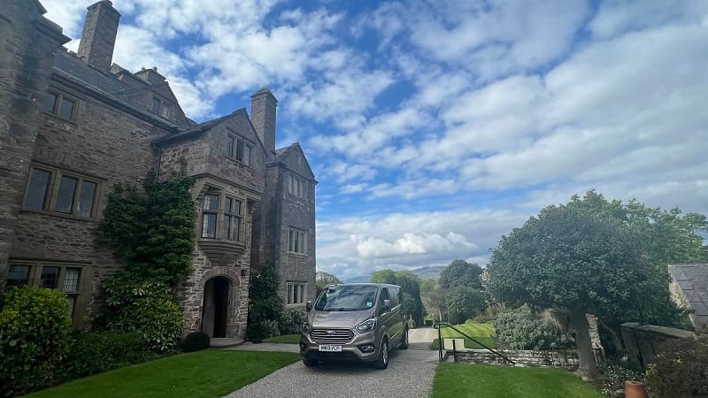
When you book with us, you can be confident in the delivery and operation of our tour services.
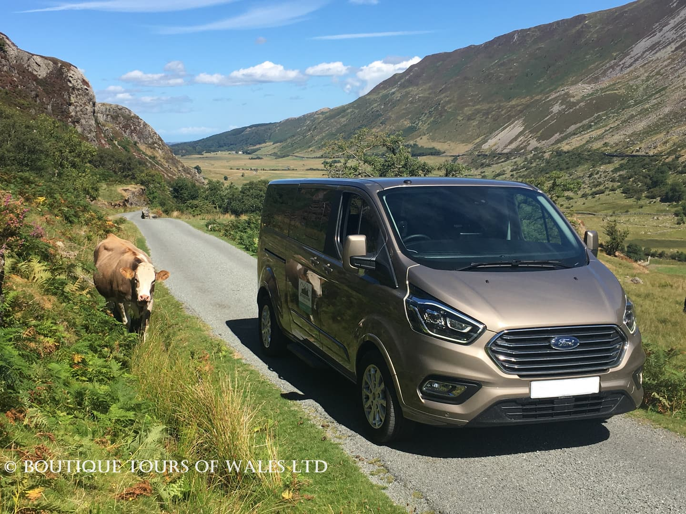
Many tour companies who feature Wales don’t know the country as well as we do! Also you should be wary that many send their driver’s to operate a tour in a land they don’t know.
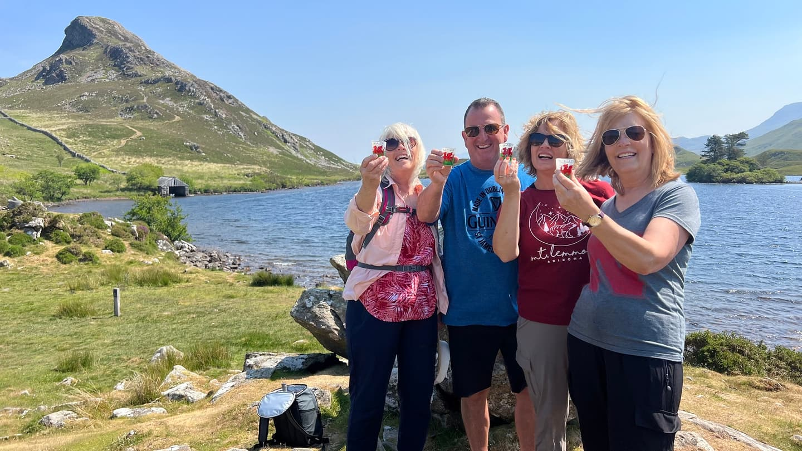
Probably the most important part of any tour and a service that not many other other driver guides offer, your personal Tour Director works and communicates directly with you right from your very first enquiry, he is with you every step of the way, right through to operating the tour himself!
You’ll just love where we take you!
Our private tour services are always in big demand, so if you like what we offer, our best advice is not to let someone else beat you to our availability.
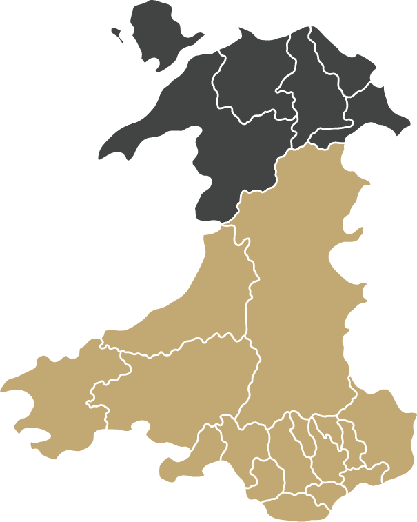
Quality Private Driver Guided Tours
If you are visiting on a time precious visit, then our private tour service provide you with some of the very best tour itineraries. Let us help take away all the hassle of deciding where to go and what to see. We have a range of specially designed day tours that can be combined into multi touring days to fit around your visit During our tours, we will introduce you to the unique culture of Wales, along with its amazing history and the most stunning scenery.
On request, we will consider extended tours to cover other regions of Wales, such as the Pembrokeshire Coastal National Park, the Brecon Beacons National Park, the Wye Valley with Hay on Wye and the capital city of Wales, Cardiff.
Our most popular day tours with our customers!
Tours of North Wales, the Eryri (Snowdonia) National Park, the Isle of Anglesey.

For a time precious visit, this tour will help you capture the very best highlights of North Wales.
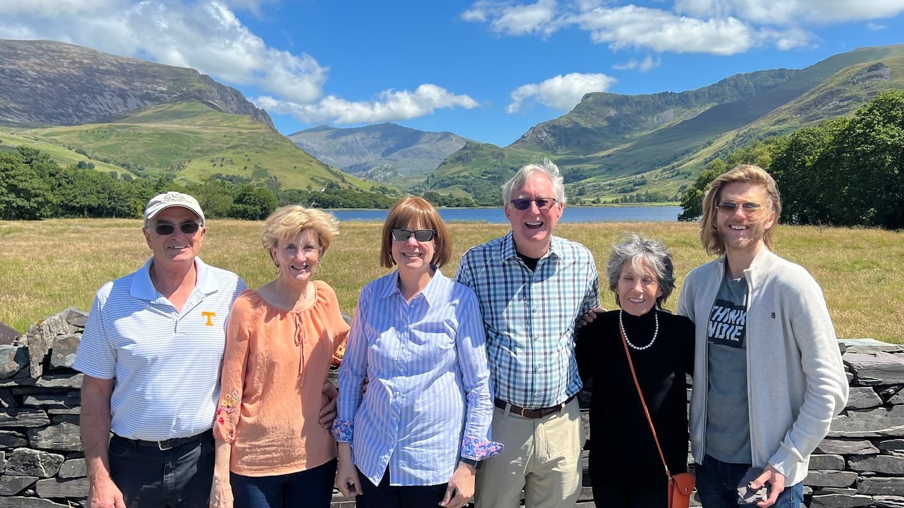
A beautiful day combining medieval history and the spectacular scenery of the Snowdonia (Eryri) National Park.

As the fifth largest island off the coast of Great Britain, the Isle of Anglesey provides a treasure trove of stunning historic and cultural sites to visit on this full day island tour.

This tour takes in a beautiful area of North Wales with historic and hidden gems, secret lakes and views and Welsh villages.
The best of the Snowdonia (Eryri) National Park capturing lakes, mountains and visiting scenic Welsh riverside villages.

From the famous Italian style village, to riding aboard one of our ‘Great Little Steam Trains’ through the scenic Snowdonia (Eryri) National Park.

A beautiful touring day of contrasting scenic locations capturing highlights of the Snowdonia (Eryri) National Park and the Isle of Anglesey.

The Snowdonia (Eryri) National Park is a land of myth and legends, from the true Welsh Princes, to dragons, giants and King Arthur. Southern Snowdonia features a beautiful coastline and stunning landscapes.
Featuring Your Own Custom Designed Tour Duration.

North Wales provides a great destination to discover and explore. With so much to see and do and a great variety of interesting tour content, we recommend three or four days of touring.
Naturally, having a good base to tour from is a key component and we recommend two great locations with the Victorian coastal resort town of Llandudno or the medieval walled town of Conwy.
There is plenty of accommodation to choose from and we recommend that you consider a single base to tour out from each day, as in the season there is so much demand for accommodation, that single night stays are generally not available at the better rated accommodation.
NEW for 2025 – Why not Consider a two centre Tour splitting between Southern Snowdonia (Eryri) and the North Wales coast
Cruise Ship Tours & Shore Excursions

Our private driver guided tours regularly get rated by cruise passengers as the best of the cruise!
We operate a very exclusive private cruise tour programme for cruise passengers stepping ashore at both Holyhead on the Isle of Anglesey and the port of Liverpool.
“I just wish that TripAdvisor would allow for 10 stars! This was the highlight of our 16 day cruise around the British Isles.”
Step ashore and enjoy touring without the crowds with your very own Boutique Tour of North Wales and be the envy of your fellow cruise passengers with reserving one of the best rated tours of the whole cruise.

Liverpool and Chester Tours
We have designed a number of quality tour options to help you make the most of your tour and visit to the North West of England.
Choose from our half day Beatles tour of Liverpool, to combining a two city visit with both the highlights of Liverpool and Chester. We can even add in some shopping at a quality outlet mall located between the two cities. Alternatively, you could add a visit to the unique workers village at Port Sunlight, or take in an Area of Outstanding Natural Beauty across the English border (just 15 miles away), with a visit into the scenic and historic borderlands of North East Wales.
So take a look at our great tour options from both Liverpool and Chester. We can custom design the perfect touring day for you and it will be our pleasure to be of service to you and help you to plan the perfect touring day.
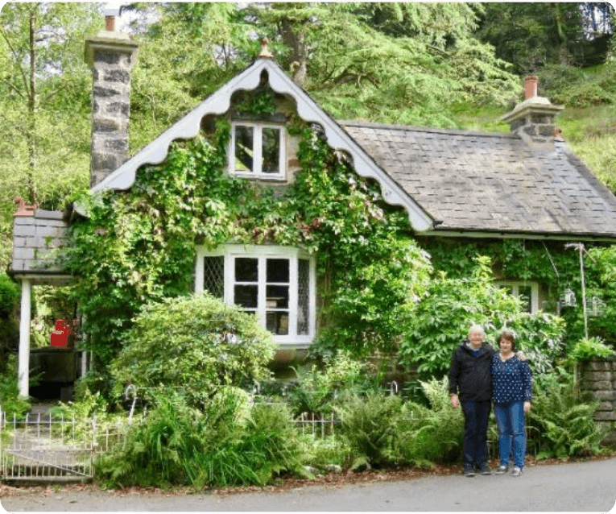
Discover Your Welsh Ancestors Right Here In North Wales
Boutique Tours can assist you right here in North Wales to discover your ancestors. Based on your own family research, we can help plan the perfect family tour to help you trace your family roots. We can tailor make your visit for you and help you come into contact with your ancestors and relations, so that hopefully you can take away some of your very own unforgettable memories of your family history.
Allow us to help with local research as we plan your ancestral tour visit.* We also have access to the local registers and record and can undertake research to help with the success of your visit. So, If you have names, dates, locations, job titles, we can hopefully assist you and help in putting together the trace and complete the mystery and jigsaw with the missing pieces.*
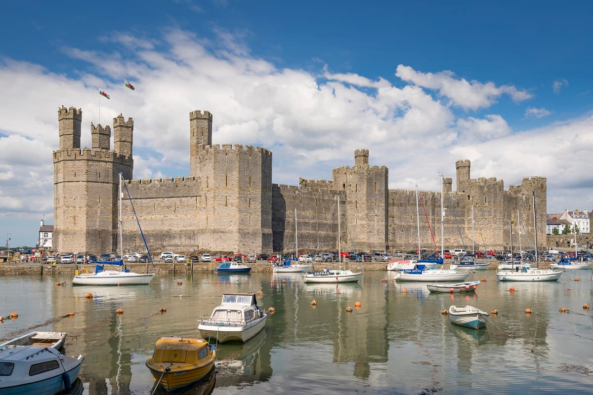
Exclusively Just For You!
Wales may be considered a small country but we are big on culture, history and scenery. We realize that you are here on a time precious visit, so we offer a variety of tour durations to fit your schedule and help you to capture the very best experience of Wales.
We are with you every step of the way with your private tour booking and arrangements, from the first point of enquiry to the end delivery of the tour services.
Your personal Tour Director, is your personal driver-guide and “Tour Concierge”, helping to assist you with accommodation recommendations, restaurant reservations, enhanced tour experiences.
So no matter what your tour requirements are, we will work with you to design the very best destination experience with your very own exclusive private tour of Wales
“This was without a doubt one of our all-time favourite tour experiences on any vacation that we have ever taken anywhere!”


Photos from our tours, shared by us and our guests at #boutiquetourswales.

The Latest Stories
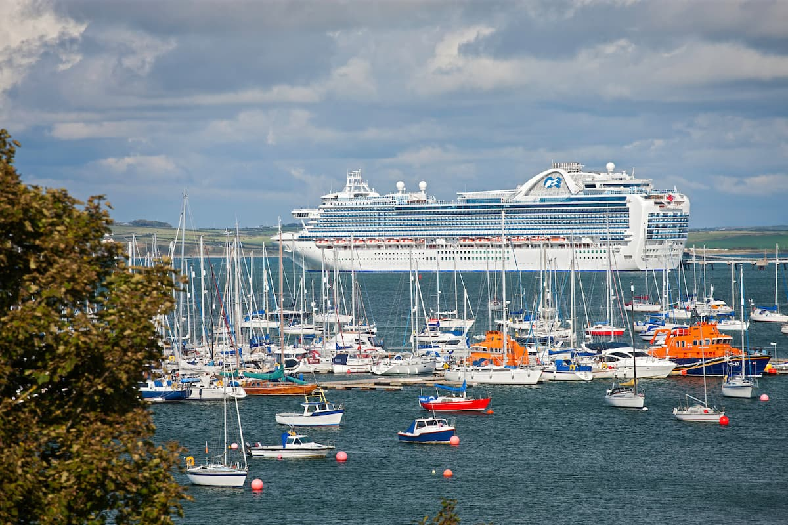
Discover Wales when your cruise ship visits Holyhead on the Isle of Anglesey, or Liverpool.
Why a private driver guided tour shows you so much more of Wales.
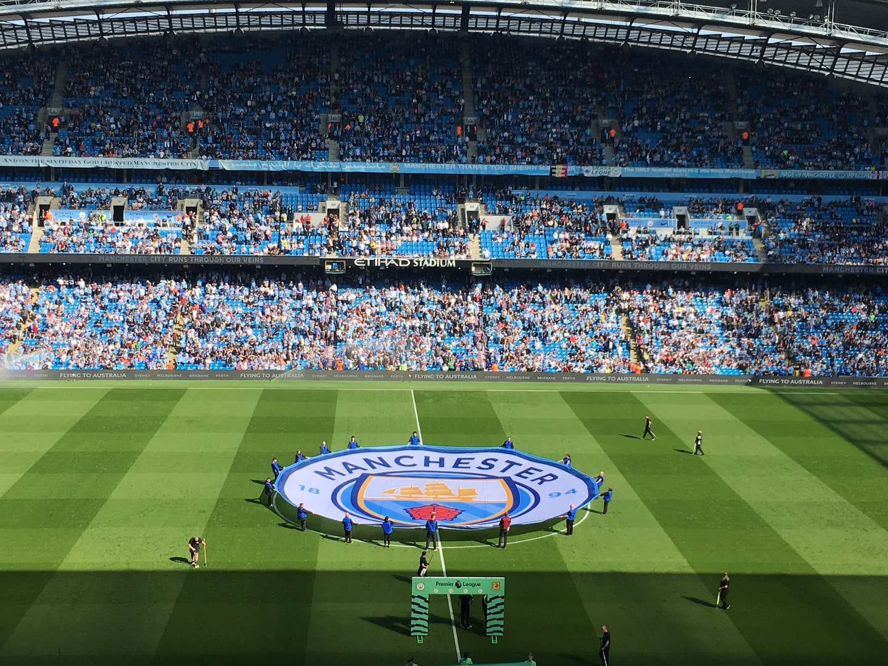
Stadium and ground visits to four Premier League greats: Manchester United, Manchester City, Liverpool and Everton.
It’s your very own private tour and we can custom design a tour itinerary to suit what you want to do and see. Our flexibility in designing a tailor made tour means you have the flexibility to make changes to any of our tour examples. So take something out or add something more appealing to your desires, or alternatively, add an element from another tour and combine it to create your perfect touring day.
All you have to do is ask and if it is possible, then it will be our pleasure to accommodate your wishes.